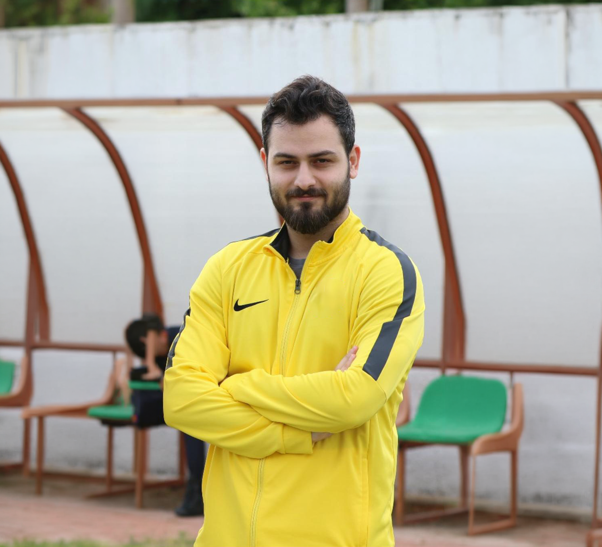
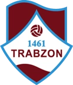
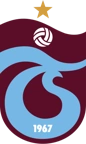
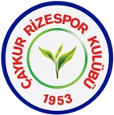
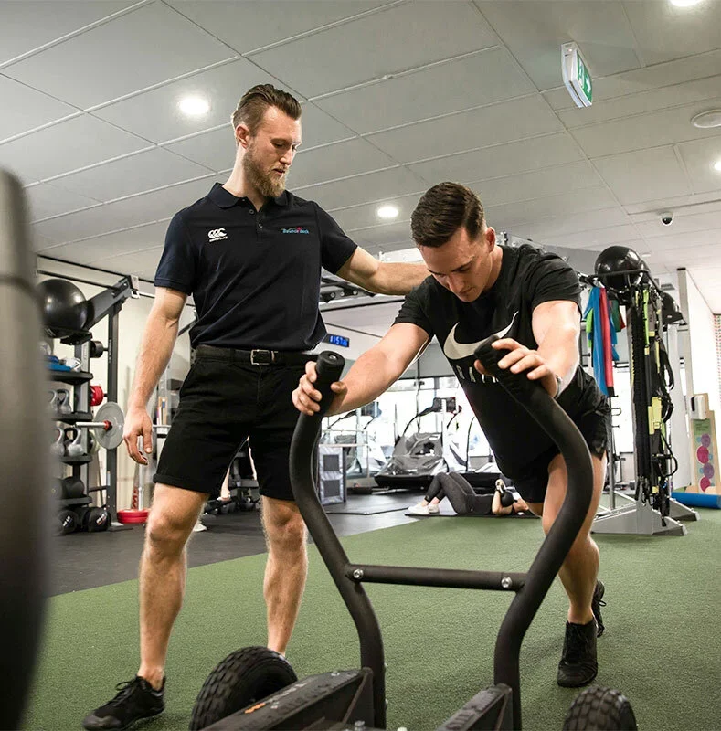
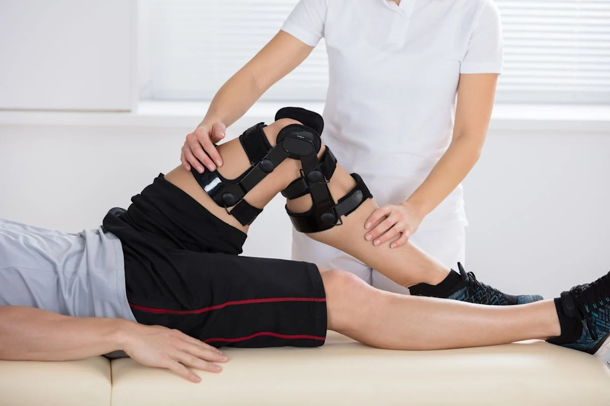
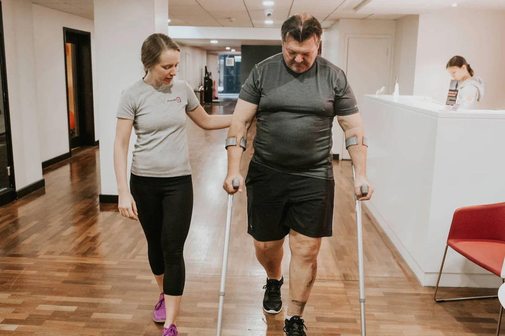
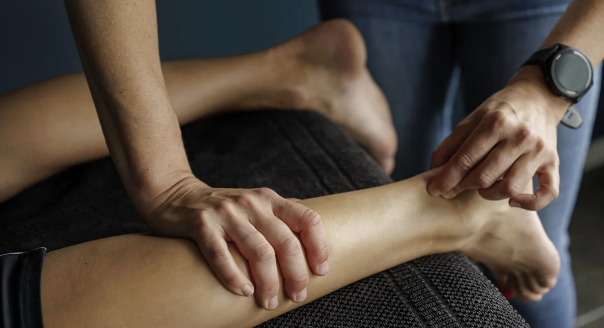
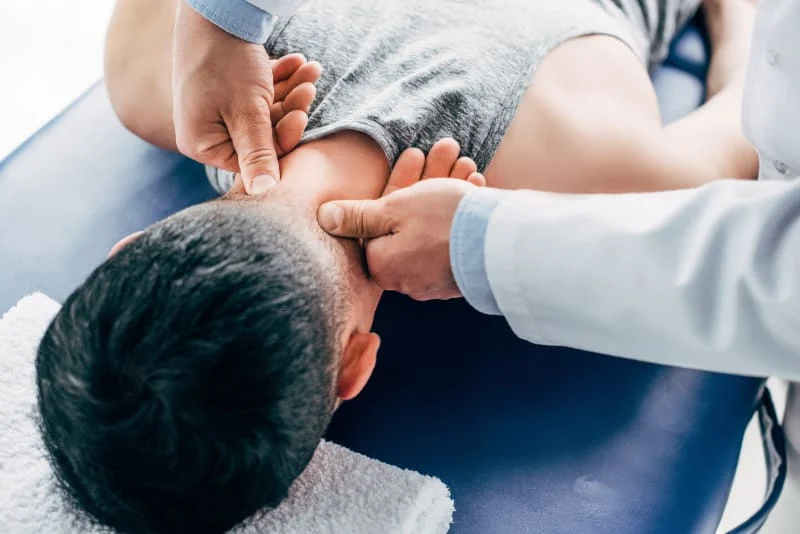
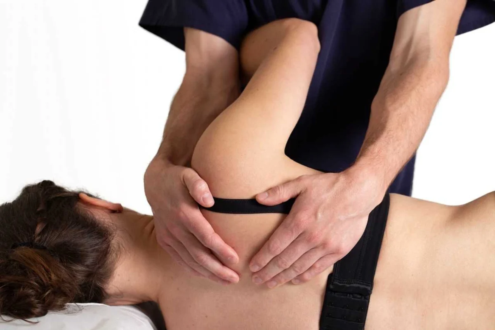

Harekete dön.Hayata katıl.
Profesyonel spor deneyimiyle, ihtiyaçlarınıza özel bir fizyoterapi ve rehabilitasyon yaklaşımı.




Hareketin her aşamasında.
Spor yaralanmalarından günlük yaşamın ihtiyaçlarına, fizyoterapi ve rehabilitasyon çalışma alanları.

Sporcu rehabilitasyonu
Spor yaralanmaları sonrasında hareket, kuvvet ve spora dönüş sürecine yönelik fizyoterapi.
Detayları inceleyin
Ön çapraz bağ (ACL) rehabilitasyonu
Ön çapraz bağ yaralanması ve ameliyatı sonrasında kişiye göre planlanan rehabilitasyon süreci.
Detayları inceleyin
Ameliyat sonrası ve ortopedik rehabilitasyon
Ortopedik ameliyatlar ve kas-iskelet sistemi sorunları sonrasında fizyoterapiye ilişkin bilgilendirme.
Detayları inceleyin
Kas ve tendon yaralanmaları
Kas ve tendon sorunlarında günlük yaşam ve sporun ihtiyaçlarını dikkate alan değerlendirme.
Detayları inceleyin
Omurga ve kronik kas-iskelet sistemi sorunları
Bel, boyun ve uzun süren kas-iskelet sistemi yakınmalarına yönelik fizyoterapi hakkında bilgi.
Detayları inceleyin
Manuel terapi
Fizyoterapi değerlendirmesi doğrultusunda ele alınan elle uygulama yaklaşımları.
Detayları inceleyinProfesyonel sahalardan,
kişiye özel bir yaklaşıma.
Ben Fizyoterapist Erhan Sulukan. 2016 yılında Muğla Sıtkı Koçman Üniversitesi Fizyoterapi ve Rehabilitasyon Bölümü'nden mezun oldum.
Meslek hayatıma profesyonel futbolda başladım. 1461 Trabzon, Trabzonspor ve Çaykur Rizespor'da fizyoterapist olarak görev aldım. Sporcuların rehabilitasyon ve spora dönüş süreçlerinde edindiğim deneyimi bugün klinik çalışmalarıma taşıyorum.
2023 yılından bu yana kendi kliniğimizde hizmet veriyoruz. Trabzon'da, sporcu rehabilitasyonu ve kas-iskelet sistemi fizyoterapisi alanlarında çalışmalarımı sürdürüyorum.
1461 Trabzon
Fizyoterapist · Profesyonel futbol
Trabzonspor
Fizyoterapist · Profesyonel futbol
Çaykur Rizespor
Fizyoterapist · Profesyonel futbol
Klinik çalışmaları
Kendi kliniğimizde fizyoterapi ve rehabilitasyon
Yıldızlı, Akçaabat / Trabzon
Harekete alan açıyoruz.
Yıldızlı Mahallesi, Armada Rezidans.
Akçaabat / Trabzon.
Birlikte ilk adımı atalım.
Görüşme ve çalışma saatleri hakkında bilgi almak için iletişime geçebilirsiniz.
+90 539 731 79 61Yıldızlı Mahallesi, Sera Gölü Caddesi,
Armada Rezidans, E Blok altı, No: 3EA,
Akçaabat / Trabzon